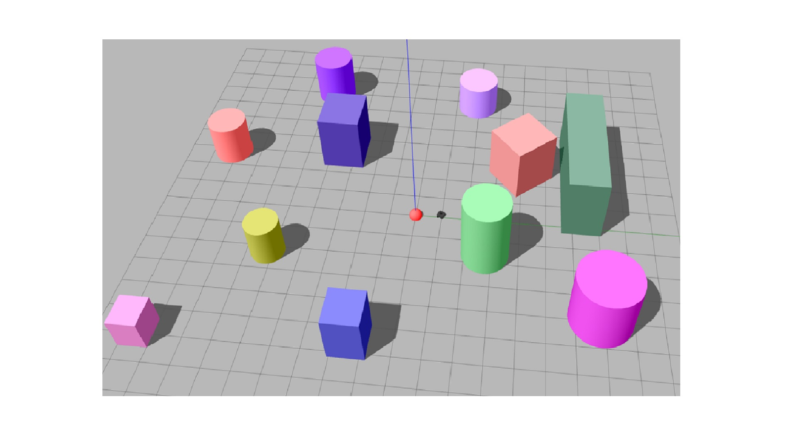

<div id="portfolio-page" class="portfolio-page-content">
    <div class="container">
        <div class="portfolio-nav">
            <div id="portfolio-close-button" class="portfolio-close-button">
                <a href="#portfolio"><i class="fa fa-close"></i></a>
            </div>
        </div>

        <div class="portfolio-title">
            <h1>Portfolio Project</h1>
        </div>

        <div class="row">
            <div class="col-sm-7 col-md-7 portfolio-block">
                <div class="owl-carousel portfolio-page-carousel">
                    <div class="item">
                        
                    </div>
                    <!--div class="item">
                        
                    </div>
                    <div class="item">
                        
                    </div-->
                </div>

                <!--div class="portfolio-page-video embed-responsive embed-responsive-16by9">
                  <iframe class="embed-responsive-item" src="https://player.vimeo.com/video/97102654?autoplay=0"></iframe>
                </div-->

                <!--
                <div class="portfolio-page-image">
                    
                </div>
                -->

                <script type="text/javascript">
                    jQuery(document).ready(function($){
                        $('.portfolio-page-carousel').owlCarousel({
                            smartSpeed:1200,
                            items: 1,
                            loop: true,
                            dots: true,
                            nav: true,
                            navText: false,
                            margin: 10
                        });
                    }); 
                </script>
            </div>

            <div class="col-sm-5 col-md-5 portfolio-block">
                <!-- Project Description -->
                <div class="block-title">
                    <h3>Description</h3>
                </div>
                <ul class="project-general-info">
                    <li><p><i class="fa fa-user"></i> Arezoo Alipanah</p></li>
                    <li><p><i class="fa fa-globe"></i> <a href="#" target="_blank">www.arezooaalipanah.github.io</a></p></li>
                    <li><p><i class="fa fa-calendar"></i> 2021</p></li>
                </ul>

                <p class="text-justify">(paper revision role)
                    <p>Easy-GT: Open-Source Software to Facilitate Making the Ground Truth for White Blood Cells Nucleus</p>
                    The nucleus of white blood cells (WBCs) plays a significant role in their detection and classification.
                     Appropriate feature extraction of the nucleus is necessary to fit a suitable artificial intelligence model to classify WBCs. 
                     Therefore, designing a method is needed to segment the nucleus accurately. 
                     The detected nuclei should be compared with the ground truths identified by a hematologist to obtain a proper performance 
                     evaluation of the nucleus segmentation method. It is a time-consuming and tedious task for experts to establish the ground
                      truth manually. This paper presents an intelligent open-source software called Easy-GT to create the ground truth of 
                      WBCs nucleus faster and easier. This software first detects the nucleus by employing a new otsu's thresholding based 
                      method with a dice similarity coefficient (DSC) of 95.42 %; the hematologist can then create a more accurate ground truth, 
                      using the designed buttons to modify the threshold value. This software can speed up ground truths forming process more 
                      than six times.</p>
                <!-- /Project Description -->

                <!-- Technology -->
                <!--div class="tags-block">
                    <div class="block-title">
                        <h3>Technology</h3>
                    </div>
                    <ul class="tags">
                        <li><a>ROS</a></li>
                        <li><a>Gazebo</a></li>
                        <li><a>Python</a></li>
                        <li><a>TensorFlow</a></li>
                        <li><a>Keras</a></li>
                    </ul>
                </div-->
                <!-- /Technology -->

                <!-- Share Buttons 
                <div class="btn-group share-buttons">
                    <div class="block-title">
                        <h3>Share</h3>
                    </div>
                    <a href="#" target="_blank" class="btn"><i class="fa fa-facebook"></i> </a>
                    <a href="#" target="_blank" class="btn"><i class="fa fa-twitter"></i> </a>
                    <a href="#" target="_blank" class="btn"><i class="fa fa-dribbble"></i> </a>
                </div>
                </Share Buttons -->

                
            </div>
        </div>
    </div>
</div>
